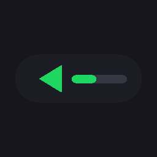

Bob Player
A tiny music bar for the few songs you play on repeat. Windows only.
One small file. No installer. Older versions.
Why I made it
I play the same three or four songs all day while I work. Ocean sounds when I’m thinking. Für Elise when I’m reading. Something faster when a deadline is close.
Big music apps felt like too much for that. So I made a player that’s just a small bar in the corner of the screen.
What it does
- Stays smallA thin bar in the corner. Drag it anywhere, or pin it on top.
- Remembers everythingYour songs, the last track, loop mode and volume are there next time.
- Loop your wayPlay once, loop the list, or repeat one song.
- Scroll for volumeRoll the mouse wheel over the bar.
- Drop in songsDrag files onto the bar. MP3, FLAC, WAV and most others work.
- Plays videos as audioDrop an MP4 or MKV and it plays just the sound.
Opening it the first time
Windows says “Windows protected your PC”
The app isn’t signed by Microsoft yet. Click More info, then Run anyway.
It asks for .NET Framework
Windows 10 and 11 already have it. If you’re asked anyway, install it and open Bob Player again.
Start over with an empty list
Delete %AppData%\BobPlayer\playlist.txt.
Reviews
Used Bob Player? Leave a line about it.